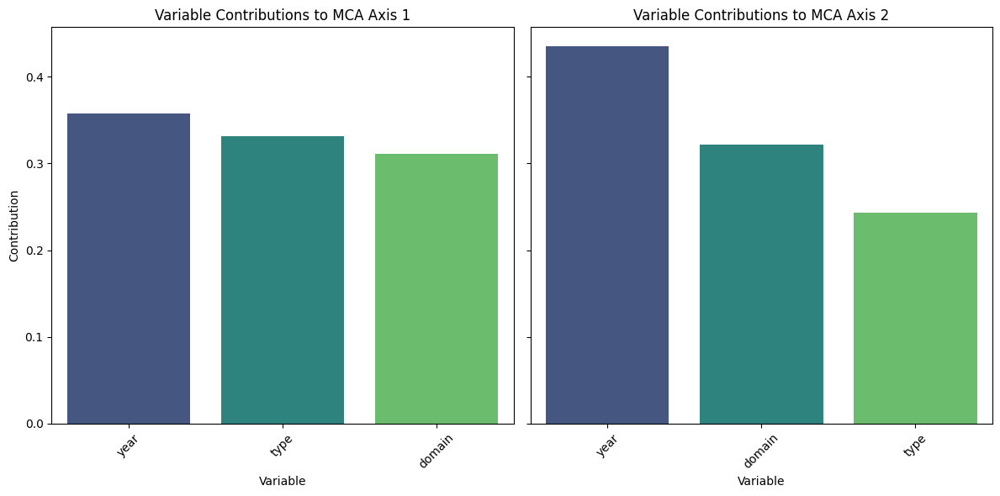

Legal Events Similarity Map
Select a domain to view its specific MCA map:
This webpage presents an analysis of legal events, including a similarity map using Multiple Correspondence Analysis (MCA) and insights into contributing variables.
Select a domain to view its specific MCA map:
This plot shows how much each variable (year, type, domain) contributes to the first two dimensions of the MCA:
